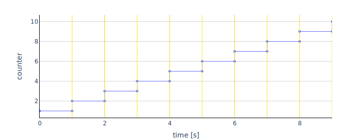

The model generates time events every second and increments the variable counter.
with the variables
| Variable | Start | Unit | Causality | Variability | Description |
|---|---|---|---|---|---|
| time | independent | continuous | Simulation time | ||
| counter | 1 | output | discrete | counts the seconds |
The plot shows the trajectories of the output variables computed with fmusim.
fmusim --interface-type me --solver cvode --output-interval 1 --output-file Stair_out.csv Stair.fmu